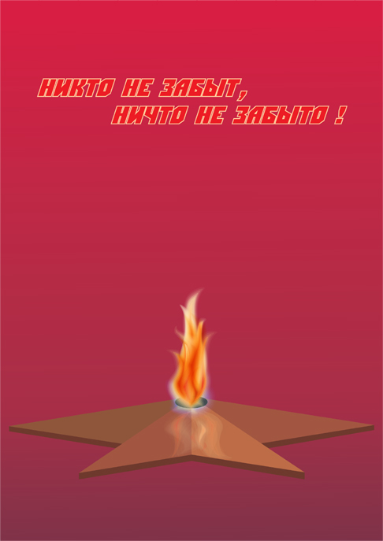

Рисование пламени.
Несмотря на то, что уже есть урок Artura по созданию фотореалистичного изображения пламени, считаю, что способ, предложенный им не совсем удачен, хотя и позволяет получить весьма эффектный результат.
Неудачный он, на мой взгляд потому, что ореол пламени получается с помощью перетекания (перехода, бленда) от пламени к цвету фона. Таким образом объект получается привязан к фону. Если Вы захотите поместить этот объект на другой фон, то эффект ореола, растворяющегося в фоне пропадёт.
Представьте, Вы нарисовали мыльный пузырь, прозрачный. Затем взяли его и поместили на другой фон, но сквозь него виден новый фон, а пузырь остался каким был. Так же хорошо было бы и со свечой. То есть без прозрачностей не обойтись. Хотя, я понимаю, с прозрачностью надо осторожно, так как она не всегда корректно растрируется. Но В Х5 версии пробовал, прозрачности растрируются корректно.

Там хотя бы огонь похож на реалистичный, а задать прозрачность ни кто не мешает. А тут пламя не пламя.
sergey, по твоей просьбе, тот же огонь, что в последних кадрах видеоурока на конкурсе Corel Teacher 2011, но на чёрном фоне:
Что-то я маненько перегрелся наверно. Этот видеоурок двух ночей стоил.
Нормально, молодец!
Снежинки порисуй, охладись :)
Как-то так, совместил твоё и моё.
Совместный урок неизбежен!
Смотри, как я придумал.
Перетекание от оранжевой линии в полупрозрачную жёлтую
Что-то вроде как-то не совсем.
Пусть другие скажут.
Вот то же изображение, созданное в видеоуроке http://corelvideo.ru/viewforum.php?f=28, обработанное дополнительно в растровых редакторах.